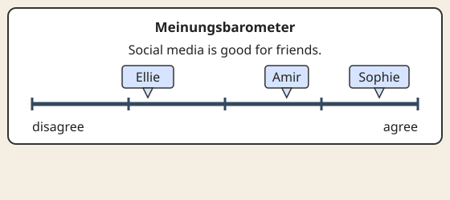

Medien und soziale Netzwerke
Mit einem KI-Tutor lernen
Ein KI-Tutor erklärt dir diese Seite und hilft dir bei den Aufgaben. Wähl deinen Assistenten:
Mit Claude öffnen Mit ChatGPT öffnen Mit Mistral Vibe öffnen
Du nutzt dein eigenes Konto beim Anbieter. Der Assistent ist kein Angebot von lernapps.net: lernapps liefert nur Inhalte und Aufgaben. Die Wahl gilt für alle Seiten, nur auf diesem Gerät.
Das Barometer zu sozialen Medien

© CC-BY-4.0Mr Hills Aussage an der Meinungswand und die Kärtchen von Ellie, Amir und Sophie.
Mr Hill hängt eine neue Aussage an die Meinungswand.
Aufgabe
Lösung
Amir
Sein Kärtchen steht rechts, aber nicht ganz außen.
Ellie
Ihr Kärtchen steht links von der Mitte.
Sophie richtige Antwort
Ihr Kärtchen steht am weitesten rechts, bei agree.
Rechts heißt mehr Zustimmung.
Das kannst du danach: Du sprichst über soziale Medien, nennst Chancen und Gefahren und sagst deine Meinung dazu.
Ein Chat über soziale Medien
| Englisch | Deutsch |
|---|---|
| social media | soziale Medien |
| post | etwas ins Netz stellen, veröffentlichen |
| follow | folgen |
| share | teilen |
| comment | Kommentar |
| message | Nachricht |
| online | im Netz |
| safe | sicher |
| private | privat, nur für ausgewählte Leute sichtbar |
| interested in | an etwas interessiert |
| unfriendly | unfreundlich |
| chance | Chance, Möglichkeit |
| danger | Gefahr |
| address | Adresse |
Mr Hill fragt im Chat nach sozialen Medien. Die Zahlen sind die Zeilen.
1 Mr Hill: People use social media every day. Is it a chance or a danger? Where is your card?
2 Sophie: I think it is a chance. I send messages to my friends at home every day.
3 Amir: I agree. You can share your hobbies, too. I am interested in photos, so I follow a group of young photographers on a photo app.
4 Ellie: I see your point, but there is a problem. We spend too much time on the internet. Last Sunday I watched videos for three hours!
5 Sophie: That is true. And some comments are unfriendly.
6 Amir: Yes, but you can delete a comment. You can also tell a teacher.
7 Ellie: I want to stay safe online. I never post my address, and my page is private.
8 Sophie: Good idea. I have been on my app for two years, and I never post my school name.
9 Amir: I have followed my group since last year. So social media is good and bad. It depends on how we use it.
10 Mr Hill: Some people say it is a chance, and others say it is a danger.
Wörter, Präpositionen und zwei Seiten
 © CC-BY-4.0
© CC-BY-4.0Ein Burger zu einer Video-App. Orange sind die Meinungen, blau ist der Grund, grün das Beispiel.
Merke
interested in: I am interested in music. Interesting heißt interessant, interested heißt, dass du dich interessierst. on: on social media, on a website, nicht in. for und since: for steht bei einem Zeitraum (for a week), since bei einem Zeitpunkt (since Monday). Dazu steht have oder has und eine zweite Verbform: I have lived here for a week.
Zwei Seiten zeigen: Some people say that games are loud, but I think they are fun.
Zeilen finden, Wörter wählen und schreiben
Aufgabe
Lösung
Sie folgt einer Gruppe von Fotografen
Das macht Amir in Zeile 3.
Sie schickt ihren Freunden Nachrichten richtige Antwort
Das sagt Sophie in Zeile 2.
Sie sieht jeden Tag drei Stunden Videos
Das erzählt Ellie in Zeile 4.
Sophies Grund steht in Zeile 2.
Aufgabe
Lösung
Richtige Antwort: Zeile 3 – Hobbys teilen; Zeile 4 – Zu viel Zeit im Netz; Zeile 5 – Unfreundliche Kommentare; Zeile 7 – Persönliche Daten
Zeile 3 nennt eine Chance, die anderen Gefahren.
Aufgabe
Wähle das Wort, das passt.
- Sie stellt ein Foto ins Netz. → She … a photo.
- Ich schreibe einen Kommentar unter das Video. → I write a … under the video.
- Wir teilen lustige Videos. → We … funny videos.
Lösung
- She posts a photo.
- I write a comment under the video.
- We share funny videos.
Aufgabe
Wähle das Wort, das passt.
- Ich interessiere mich für Tiere. → I am … in animals.
- Ich lese viel im Internet. → I read a lot … the internet.
- Ich bin seit zwei Stunden online. → I have been online … two hours.
- Ich folge ihr seit gestern. → I have followed her … yesterday.
Lösung
- I am interested in animals.
- I read a lot on the internet.
- I have been online for two hours.
- I have followed her since yesterday.
Aufgabe
Schreibe die Sätze auf Englisch. Satz 1: Wir sind Freunde in den sozialen Medien. Satz 2: Meine Freundin stellt jede Woche ein Foto ins Netz. Satz 3: Manche Leute sagen, dass Apps Spaß machen, aber ich denke, sie brauchen zu viel Zeit. Die englischen Wörter sind nur eine Hilfe: Ergänze, was für einen ganzen Satz fehlt.
- we · be · friends · social media
- my · friend · post · photo · every week
- some people · say · apps · fun · but · I · think · they · take · too much time
Lösung
- We are friends on social media.
- My friend posts a photo every week.
- Some people say that apps are fun, but I think that they take too much time. (auch richtig: Some people say that apps are fun, but I think they take too much time.; Some people say apps are fun, but I think that they take too much time.; Some people say apps are fun, but I think they take too much time.)
Aufgabe
Hör zu und schreibe, was du hörst.
- KI
- KI
- KI
Lösung
- I post a photo once a week.
- My friend sends me a message every morning.
- It is safe to talk to friends online.
Deine Meinung mit zwei Seiten
Aufgabe
Hör zu, sprich nach und nimm dich auf. Vergleiche dann mit dem Original.
Tipp
Hör zu. Sprich dann langsam nach.
- Do you follow anyone online?KI
- Please be kind in your comments.KI
- What do you think about social media?KI
Zum Aufnehmen braucht diese Aufgabe JavaScript. Die Beispiele kannst du auch ohne anhören.
Lösung
- Do you follow anyone online?
- Please be kind in your comments.
- What do you think about social media?
Offene Aufgabe
Wähle eine Aussage über Medien, zum Beispiel „Online games are good for children.“ Stelle dein Kärtchen auf das Barometer und schreibe fünf Sätze: Meinung, Grund, Beispiel, ein Satz mit „Some people say …, but I think …“ und deine Schlussmeinung.
Tipp
Die App bewertet nicht. Prüfe deinen Text anhand der Punkte.
Eine gute Antwort enthält:
- Die Meinung hat einen Grund mit because und ein Beispiel mit For example. Nachlesen
- Ein Satz zeigt die andere Sicht mit Some people say …, but I think …. Nachlesen
- Wörter wie post, share oder interested in und die Präpositionen on, for und since sind richtig benutzt. Nachlesen
- Der Text ist sachlich und belehrt niemanden. (Form)
Lösung
I think online games are fun. They are fun because I can play with other children. For example, last week I played a game with a team and we won. Some people say that games take too much time, but I think one hour is fine. So online games are good if we play for a short time and stay safe.
Rückblick auf das Kapitel
In diesem Kapitel hast du drei Dinge gelernt. Du sagst deine Meinung, stimmst zu und widersprichst, stützt sie mit dem Argument-Burger und sprichst über Sport, Musik, Fernsehen und soziale Medien. Im nächsten Kapitel verbindest du deine Argumente.
Fehler gefunden oder eine Idee für diese App?